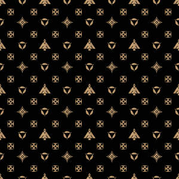
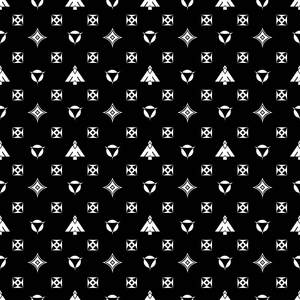

Trade Mark Journal No.2025/027 4 July 2025
UK00004220136 17 June 2025 (25,35)
Mark 1

Mark 2

- Class 25
- Clothing; Knitwear [clothing]; Jackets [clothing]; Ready-to-wear clothing; Woolen clothing; Furs [clothing]; Garments for protecting clothing; Layettes [clothing]; Clothing layettes; Linen clothing; Headbands [clothing]; Headbands for clothing; Gloves [clothing]; Gloves as clothing; Clothes; Kerchiefs [clothing]; Jerseys [clothing]; Denims [clothing]; Shorts [clothing]; Cashmere clothing; Gabardines [clothing]; Leather clothing; Clothing of leather; Leather (Clothing of -); Silk clothing; Parts of clothing, footwear and headgear; Collars [clothing]; Knitted clothing; Windproof clothing; Hoods [clothing]; Embroidered clothing; Belts [clothing]; Belts for clothing; Wristbands [clothing]; Bandeaux [clothing]; Waterproof clothing; Rainproof clothing; Casual clothing; Visors [clothing]; Jackets being sports clothing; Jackets (Stuff -) [clothing]; Stuff jackets [clothing]; Playsuits [clothing]; Bottoms [clothing]; Ready-made clothing; Clothing for leisure wear; Latex clothing; Trunks being clothing; Woven clothing; Clothing for sports; Sports clothing; Athletic clothing; Leisure clothing; Ties [clothing]; Clothing for children; Bodies [clothing]; Tops [clothing]; Weatherproof clothing; Pockets for clothing; Fabric belts [clothing]; Water-resistant clothing; Triathlon clothing; Beach clothing; Thermal clothing; Chaps (clothing); Men's clothing; Braces for clothing; Clothes for sports; Sports garments; Sports footwear; Sports shirts; Sports jackets; Sports shoes; Sports wear; Sports jerseys; Sports vests; Sports pants; Sports socks; Sports singlets; Sport shoes; Athletics footwear; Sportswear; Fashion hats; Clothes for sport; Face masks [fashion wear] ; Beach clothes; Work clothes; Quilted jackets [clothing]; Exercise wear; Casual wear; Leisure wear; Gym shorts; Jogging pants; Gymwear; Men's sandals; Boy shorts [underwear]; Under shirts; Under garments; Socks for men; Suspender belts for men; Men's underwear; Running vests; Shoes; Leather garments; Hats; Beanie hats; Baseball hats; Caps [headwear]; Scarves; Suits; Blazers; Trousers; Shirts; Vests; Tank tops; T-shirts; Suspender belts; Waist belts; Hoodies; Sweatshirts; Hooded sweat shirts; Tracksuits; Tracksuit bottoms; Shoes for leisurewear.
- Class 35
- Retail services connected with the sale of clothing and clothing accessories; Business management of wholesale and retail outlets; Business management of retail outlets; Retail store services in the field of clothing; Administration of the business affairs of retail stores; Online retail store services in relation to clothing; Online retail store services relating to clothing; Retail services in relation to confectionery; Retail services in relation to footwear; Retail services in relation to jewellery; Retail services in relation to furnishings; Retail services in relation to clothing; Retail services in relation to smartphones; Retail services in relation to smartwatches; Retail services relating to jewelry; Retail services in relation to downloadable virtual footwear; Online retail services relating to clothing; Online retail services relating to jewelry; Retail services connected with stationery; Management of a retail enterprise for others; Retail services relating to clothing; Online retail services relating to cosmetics; Retail of third-party pre-paid cards for the purchase of entertainment services; Retail services in relation to fashion accessories; Retail services in relation to bags; Business management of wholesale outlets; Retail services in relation to downloadable virtual clothing; Online retail services in relation to downloadable virtual footwear; Retail services in relation to fabrics; Online retail store services relating to cosmetic and beauty products; Retail services in relation to downloadable virtual headwear; Online retail services relating to handbags; Retail services in relation to clothing accessories; Online retail services in relation to downloadable virtual clothing; Mail order retail services for clothing; Retail services in relation to downloadable virtual handbags; Retail services in relation to car accessories; Online retail services in relation to downloadable virtual headwear; Retail services in relation to stationery supplies; Retail services relating to home textiles; Retail services in relation to toiletries; Online retail services in relation to downloadable virtual handbags; Retail services relating to automobile accessories; Retail services in relation to umbrellas; Retail services in relation to luggage; Online retail services for downloadable digital music; Online retail services relating to luggage; Mail order retail services for clothing accessories; Retail services in relation to educational supplies; Retail services relating to furs; Retail services in relation to sporting equipment; Retail of third-party pre-paid cards for the purchase of multimedia content; Retail services relating to sporting goods; Business consulting; Business consultancy; Business consulting for enterprises; Business planning and business continuity consulting; Business management; Business networking; Consultancy regarding business organisation and business economics; Business organisation; Business management advice relating to manufacturing business; Business marketing services; Business administration; Business expertise; Marketing; Advertising and marketing; Promotional marketing; Influencer marketing; Advertising and marketing services; Product marketing; Digital marketing; Online marketing; Internet marketing; Publicity and advertising; Online advertising; On-line advertising and marketing services; Promotion, advertising and marketing of on-line websites; Online advertising services; Online business networking services; Marketing, advertising, and promotional services; Marketing services; Promotional marketing services using audiovisual media; Distribution of advertising, marketing and promotional material; Advertising of business web sites; Advertising, marketing and promotion services; Marketing, advertising and promotion services; Modeling services for advertising or sales promotion; Modeling for advertising or sales promotion; Fashion show exhibitions for commercial purposes; Promoting the sale of fashion goods through promotional articles in magazines; Fashion shows for promotional purposes (Organization of -); Organization of fashion shows for promotional purposes; Organization of fashion parades for sales promotion purposes; Advice relating to the business management of fitness clubs; Advice relating to the business operation of fitness clubs; Wholesale services in relation to footwear; Marketing research in the fields of cosmetics, perfumery and beauty products.
IGNEXIO CO LTD